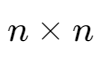
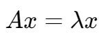
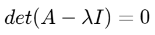
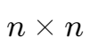
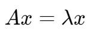

特征值和特征向量 | Eigenvalue and Eigenvector
对于一个  矩阵 A，有 。这里的  为 A 的特征值,,，x 为 A 的特征向量,,。
为 A 的特征值,,，x 为 A 的特征向量,,。
特征方程 | Characteristic Equation

计算方法
对于特征值  ，其即为特征方程的解。
，其即为特征方程的解。
将特征值代入方程  ，其解即为特征向量。
，其解即为特征向量。
对于一个  矩阵 A，有 。这里的 为 A 的特征值,,，x 为 A 的特征向量,,。
对于特征值 ，其即为特征方程的解。
将特征值代入方程 ，其解即为特征向量。